Norway sealed their place in the Round of 32 with a game to spare, but a routine-looking 3-1 lead turned tense late on as Senegal's Ismaila Sarr struck twice. Marcus Pedersen, on for his World Cup debut after Julian Ryerson's injury, opened the scoring before Haaland's brace either side of Sarr's first put Norway seemingly in control - until a stoppage-time second from Sarr made the final minutes nervy.
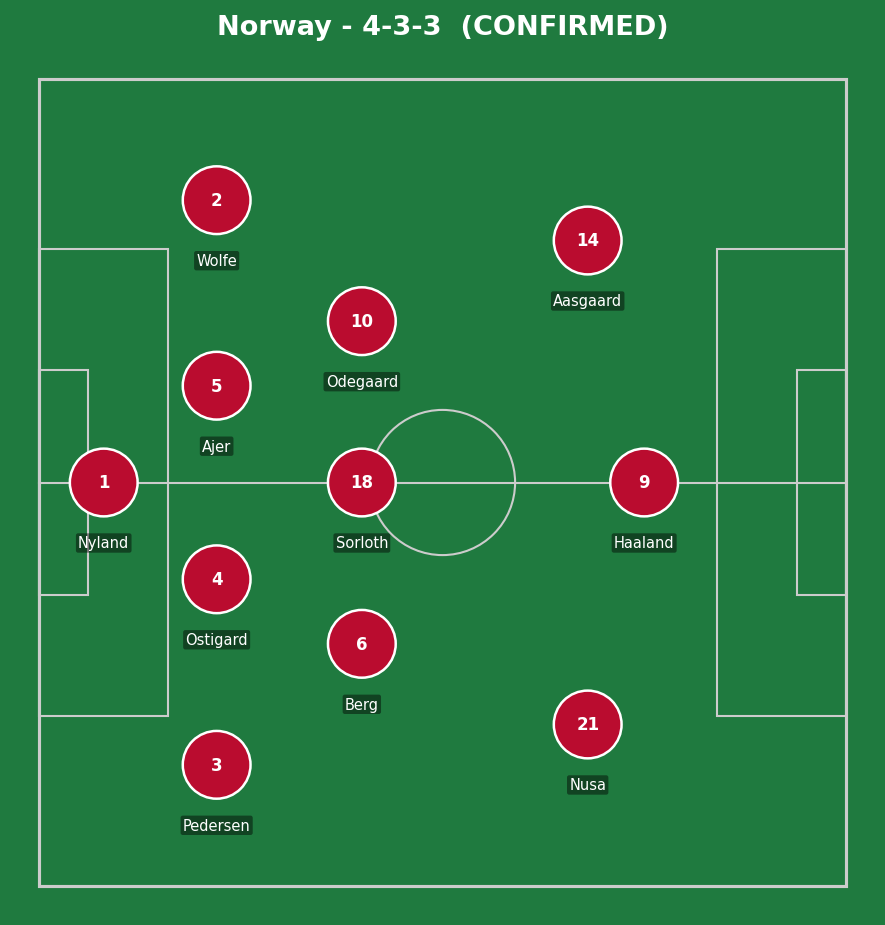
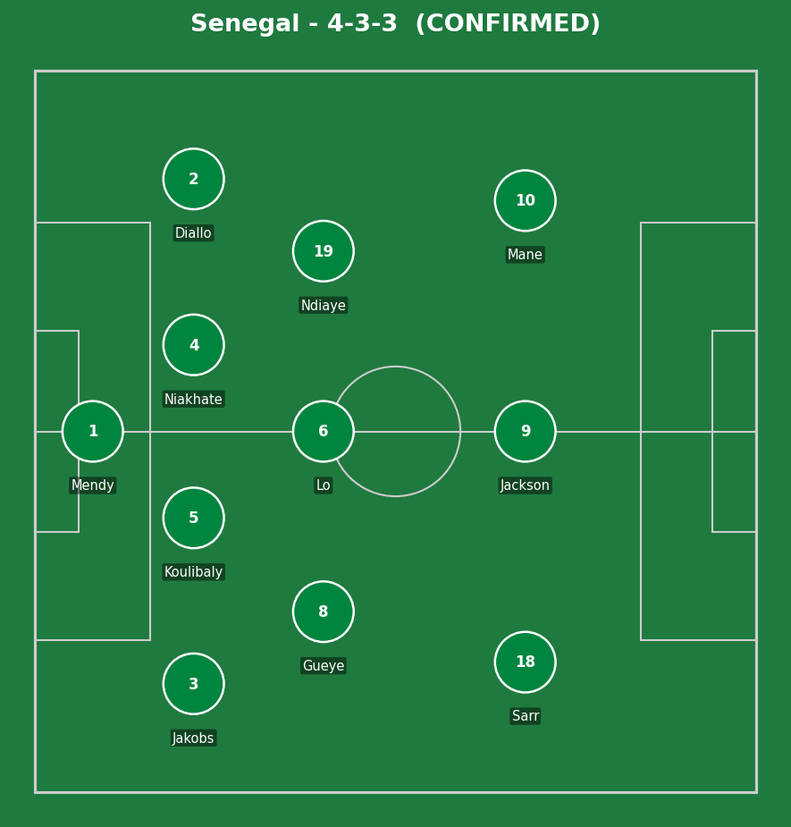
Norway (4-3-3): Nyland; Pedersen, Ostigard, Ajer, Wolfe; Berg, Sorloth, Odegaard; Nusa, Haaland, Aasgaard. Senegal (4-3-3): Mendy; Jakobs, Koulibaly (c), Niakhate, Diallo; Gueye, Lo, Ndiaye; Sarr, Jackson, Mane.
Norway's directness in transition was the clearest tactical thread of the night - Haaland's two goals both came from quick vertical moves rather than patient build-up, exploiting exactly the kind of space Senegal left in behind when committing players forward. Odegaard's range of passing (assists for both Pedersen's and Haaland's first goal, directly or indirectly) was the connective tissue making those transitions work.
Senegal's underlying numbers (51% possession, 16 shots to Norway's 13) suggest a side that competed well territorially, but individual errors at the back - specifically Koulibaly's, twice - undid a lot of that good work. Credit to Sarr and Mane for the quality in attack that kept Senegal's hopes alive until the final whistle.
The key tactical moment: Norway's choice to sit back and absorb pressure after going 3-1 up rather than continue pushing for a fourth. It nearly backfired with Sarr's stoppage-time goal, but the discipline to protect the lead ultimately held, even if it made for an unnecessarily tense finish.
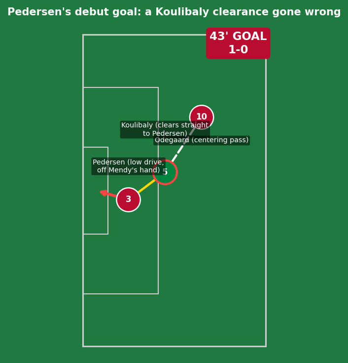
A goal built almost entirely on a Senegal mistake. Odegaard's centering pass wasn't even especially threatening, but Koulibaly's attempted clearance went straight to Pedersen at the top of the box - a genuine individual error under minimal pressure. Pedersen still had to finish, taking two touches before a low drive that should have been saveable, but crept under/off Mendy's hand. A World Cup debut goal, on for the injured Ryerson just 30 minutes earlier.
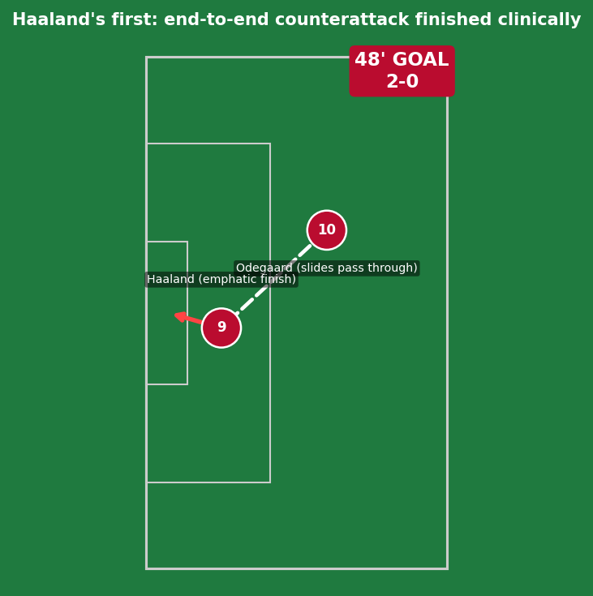
A genuinely well-worked end-to-end counterattack - Odegaard's pass split Senegal's defense, and Haaland's finish was emphatic and clinical, beating Mendy's outstretched hand. No individual defensive error to point to here, just Norway exploiting space in transition at real pace.
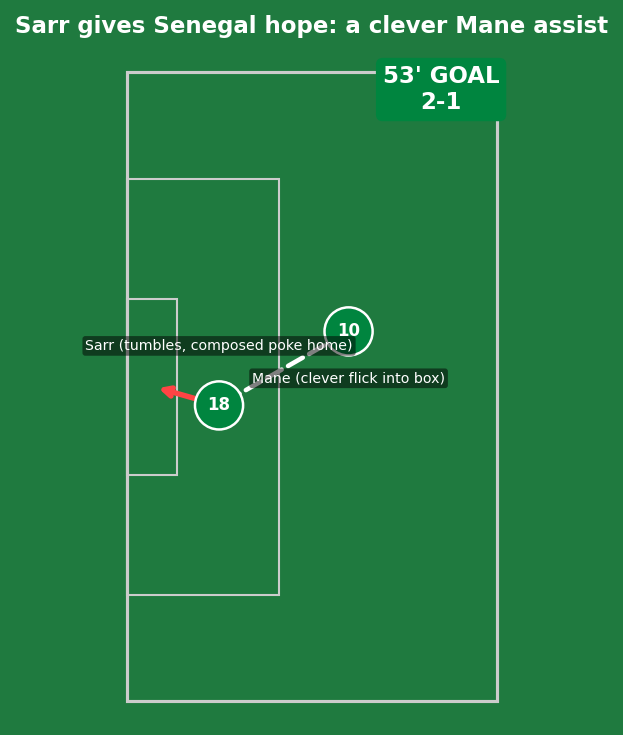
Real quality from Senegal here - Sadio Mane's flick into the box was clever and well-weighted, and Sarr showed genuine composure to poke the ball home even while tumbling to the ground. A goal built on individual brilliance from two of Senegal's most experienced players, not a Norway mistake.
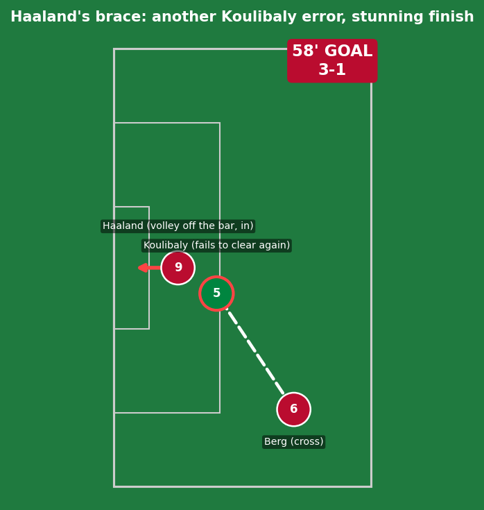
Another costly Koulibaly moment - failing to clear Patrick Berg's cross, the ball found Haaland, who steered an excellent volley in off the crossbar. The finish itself required real technique (volleying off the underside of the bar isn't simple), but the chance was created by a second individual defensive lapse from the same player. This took Haaland to four goals in two World Cup games - only Harry Kane (2018) has scored twice in each of his first two World Cup matches in the past 50 years.
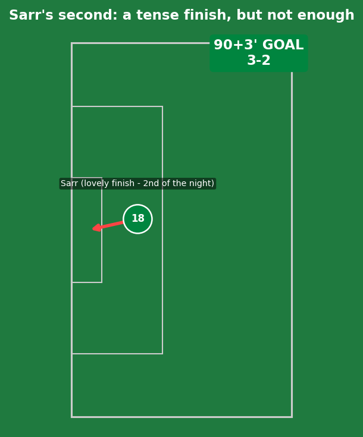
A lovely, well-taken finish to cap a fine individual night for Sarr - real quality under pressure late in the game, even though it ultimately wasn't enough to deny Norway the win. A goal that made the final whistle far more nervous for Norwegian fans than the scoreline before it suggested it would be.
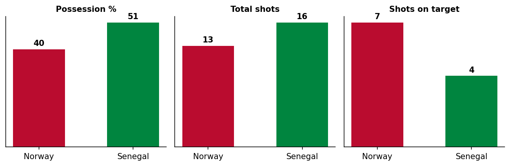
Senegal actually edged possession (51%) and out-shot Norway (16 to 13) - a reminder that this was a genuinely competitive match decided by moments and individual errors, not one-way traffic.
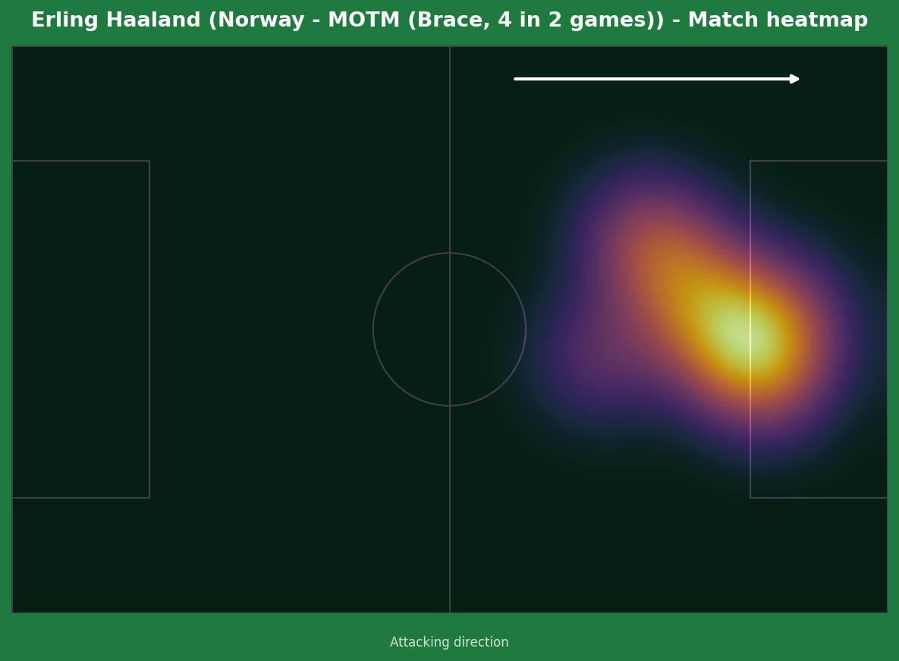
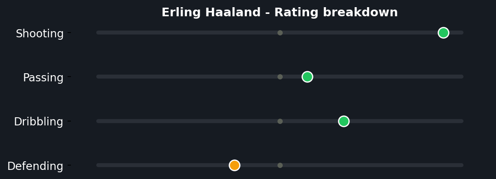
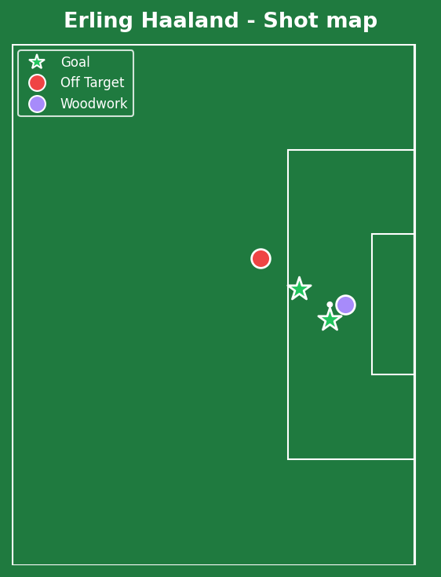
Four goals in two World Cup games puts him in genuinely rare historical company - only Harry Kane has managed a brace in each of his first two World Cup matches in the last 50 years. He also hit a post in first-half stoppage time after Mendy lost control of the ball, meaning the eventual tally could realistically have been even higher. Currently second in the Golden Boot race, one behind Messi and level with Mbappe - the race for the tournament's top scorer is shaping up to be one of the standout storylines of the entire competition.
Illustrative reconstruction based on known event locations, not raw GPS tracking data.
Haaland - 8.5 ⭐ MOTM (brace)
Odegaard - 8.0 (2 assists, controlled tempo)
Pedersen - 7.0 (debut goal)
Nyland - 6.0 (couldn't be faulted much)
Sarr - 8.0 (brace)
Mane - 7.0 (assist, constant threat)
Koulibaly - 4.0 (two costly errors)
Mendy - 5.5 (injured off, mixed night)
Next: Norway face France in a top-of-the-group decider. Senegal face Iraq in a must-win match to keep any realistic hope of progression alive.
💬 Reactions & Comments